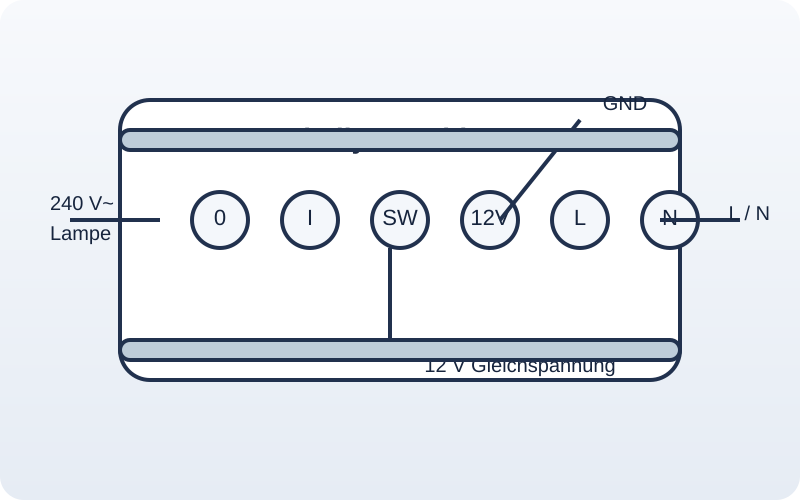

Shelly-Geräte sind kleine Smart-Home-Module, die elektrische Verbraucher schalten, messen und automatisieren können. Sie werden meist per WLAN eingebunden und lassen sich über App, Weboberfläche, HTTP/API oder MQTT steuern.
Für Schüler kurz:
Shelly = fertiges Smart-Home-Modul mit Relais, WLAN und manchmal Leistung
Ein Shelly ist ein fertiger Mini-Computer für die Hausautomation. Er kann Lampen, Motoren oder andere Verbraucher schalten und oft auch den Energieverbrauch messen.
Noch kürzer:
Shelly = fertiges Smart-Home-Modul mit Relais, WLAN und manchmal Leistungsmessung.
Shelly-Geräte sind kompakte Smart-Home-Module für die Hausautomation. Sie können Verbraucher schalten, Messwerte erfassen und über WLAN mit App, Browser oder anderen Geräten wie einem ESP32 kommunizieren.
- Shelly Plus 1 · Modul kennenlernen, Verbindung per WLAN, Weboberfläche des Shellys
step-01-vorher.htmla> / step-01.html von ChatGPT überarbeitet - Shelly Plus 1 · in ein lokales WLAN einbinden, Steuerung über Weboberfläche und RPC-API
step-02.html
- Sammlung von HTTP-Anfragen für "Shelly Plus 1"
- Shelly Knowledge Base!
- Shelly Knowledge Base!
- Shelly - Devices
- - Shelly Pus 1
- Shelly - API Docs
- Shelly Script Examples auf GitHub
- Shelly Plus 1 Web Interface Guide
- Shelly Smart Control Guide
- Finde heraus, wie man einen Shelly 1 oder Shelly 2.5 in ein WLAN einbindet und über die Weboberfläche steuert.
